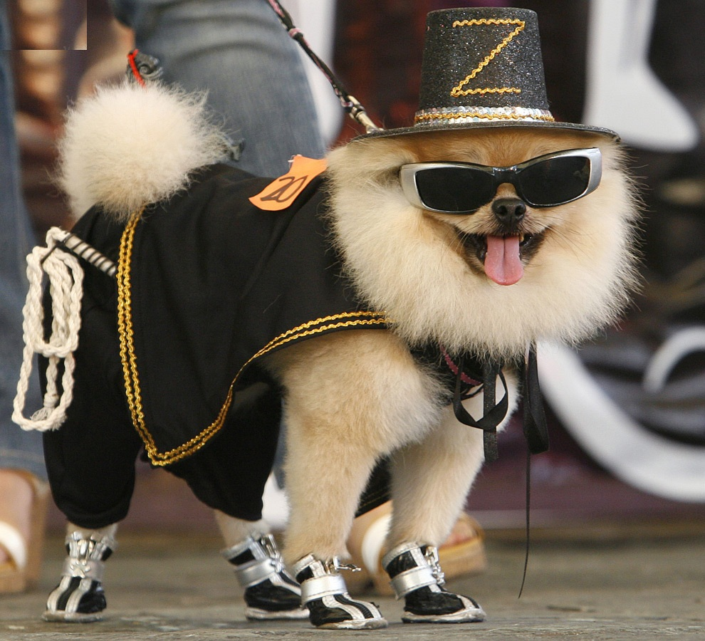

En dag för mig och min hund
- Kl 7 - Vovven vaknar efter att ha sovit sin skönhetssömn i sin Hästens-säng.
- Kl 7.30 - Vovven går på toaletten eftersom det är en sådan intelligent hund.
- Kl 8 - Vovven äter frukost, idag blir det oxfilé med potatis.
- Kl 9 - Vovven lämnar alla barn på dagis.
- Kl 10 - Vovven städar huset och tvättar all tvätt.
- Kl 12 - Vovven träffar en annan vovve för en trevlig hundlunch på stan.
- Kl 14 - Vovven går hem och sover middag. Lunchen gjorde honom trött.
- Kl 15 - Vovven tittar på en repris av Dallas.
- Kl 16 - Vovven lagar mat till hela familjen
- Kl 17 - Famijen kommer hem och en fantastisk kvällsmat står framdukad i köket. Vovven var kock i ett tidigare liv.
- Kl 18 - Vovven spelar Nintendo Wii med barnen.
- Kl 19 - Vovven tittar på ett tv-program om katter och konstaterar att hundar är mer intelligenta.
- Kl 19.30 - Vovven känner sig trött och sliten efter en helt vanlig hunddag, så han tar på sig sin sidenpyjamas och går och lägger sig samtidigt som barnen.
.